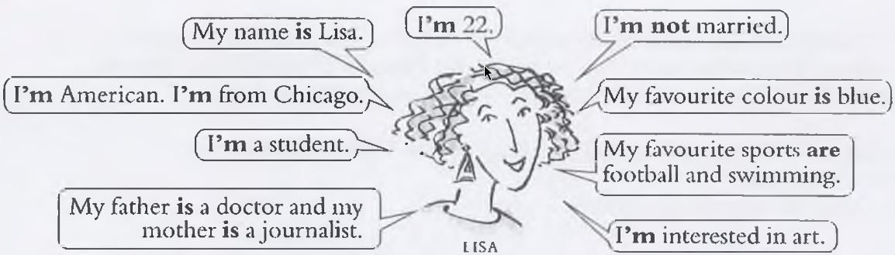

Conjunctions join two sentences to make one longer sentence.
and / but / or
and – adds information (between the last two things)
He doesn't like herandshe doesn't like
him.
it is not necessary to repeat "we" and "she"
We stayed at homeand(we)* watched
television. My sister is marriedand(she)* lives in
London.
We use and between the last two things when listing.
I got home, had something to eat, sat down in an armchair and fell
asleep.Ain is at work, Sue has gone shoppingandChris is playing football.
but – shows contrast
I bought a newspaperbutI didn’t read
it. It's a nice housebutit hasn't got a
garden
or – shows a choice
Shall I wait hereordo you want me to
come with you? Do you want to go outorare you too
tired?
so – result
so introduces the result of something.
It was very hot, sohe opened the
window.
The water wasn't clean, sowe didn't go
swimming.
It was lateandI was tired,
soI went to bed.
they like films, sothey often go to the
cinema.
because – reason
because gives the reason for something. It can also start a sentence.
I stayed at home because I didn’t have your
number.
Because the water wasn’t clean, we didn’t go
swimming.
for / nor / yet
for – gives a reason or cause (more formal than "because") I
decided to stay home, forthe weather was terrible. She was worried, forhe hadn't called all
day.
Note: Unlike "because", "for" cannot start a sentence. It always comes after the first clause.
When the subject is the same, we keep it because "for" must join two full clauses:
He felt proud, forhe had won the
competition. (We cannot say "for had won" – the subject must be
repeated).
nor – adds a negative idea to another negative clause (used with "not", "never", or "didn't")
He didn't study, nordid he complete his
homework. She never called, nordid she send a message.
Grammar note: After "nor", we use inversion – the subject and verb change
order (like a question): did he, does she, had they.
When the subject is the same, we can drop it, but the inversion stays:
He doesn't
like coffee, nor(does he) like tea. (Usually we
keep the inversion for clarity: nor does he
like tea).
yet – shows a strong or surprising contrast (similar to "but", but with more surprise)
I was exhausted, yetI couldn't fall
asleep. She is very rich, yetshe lives in a tiny apartment.
When the subject is the same, it is not necessary to repeat it:
He studied for
hours, yet(he) failed the test. The food was delicious, yet(it) was very
expensive.
More than one conjunction in a sentence:
It was lateandI was tired,
soI went to bed.
I always enjoy visiting London, butI wouldn’t
like to live therebecause
it’s too big.
2. Verb to be – Present tense (am / is / are)

Positive
I
am
(I'm)
you
are
(You're)
He
is
(He's)
She
(She's)
it
(it's)
Paul
We
are
(We're)
They
(They're)
Paul and he
I am (I’m) cold. Can you close the window?
I am 32 years old. My sister is 29.
My brother is very tall. He’s a policeman.
John is afraid of dogs.
It is ten o’clock. You’re late again.
Ann and I are good friends.
Your keys are on the table.
Negative
I
am not
(I'm not)
you
are not
(You're not or You aren't )
He
is not
(He's not or He isn't )
She
(She's not or She isn't )
it
(It's not or It isn't )
Paul
(Paul isn't)
We
are not
(We're not or We aren't)
They
(They're not or They aren't)
Paul and he
(Paul and he aren't)
I’m tiredbutI’m not hungry.
Tom isn’t interested in politics. He’s interested in music.
Jane isn’t at home at the moment. She’s at work.
Those people aren’t English. They’re Australian.
It’s sunny todaybutit isn’t warm.
Questions
just flip the verb to be and the noun bro
Am I late? – No, you’re on time.
Is your mother at home? – No, she’s out.
Are your parents at home? – No, they’re out.
Is it cold in your room? – Yes, a little.
Your shoes are nice. Are they new?
Question words
Where is your mother? – She’s at home.
What colour is your car? – It’s red.
How are your parents? – They’re well.
How much are these postcards? – Fifty pence.
Short answers
Are you tired? – Yes, I am.
Are you hungry? – No, I’m not.
Is your friend English? – Yes, he is.
Are these your keys? – Yes, they are.
That’s my seat. – No, it isn’t.
3. Present Tenses
Present Simple – form
Infinitive (without to). Add -s for he / she / it.
I like / You like He/She/It/Paul likes We like / They like / Paul and he like
Verbs ending in o, s, ch, sh, x add -es:
go → goes miss → misses watch → watches wish → wishes relax → relaxes
Questions: 'do' / 'does' before the noun bro
Do you like Italian food? Does she like Italian food? What do you want? Where does she live?
Negatives: 'do not' / 'does not' after the noun bro
I do not like that. She does not like that. Short forms: don’t / doesn’t
Irregular: have → has | be → am / is / are
Present Simple – usage
Habitual actions:I usually get up at 7.30.
General truths / situations:Liz plays in the school team. We like ice
cream.
Facts always true:The sun rises in the east.
Present Continuous – form
be + -ing form of the main verb.
I am relaxing / You are relaxing / He/She is relaxing / We are relaxing / They are relaxing
Spelling:
verbs ending -e drop the -e: like → liking
one syllable, one vowel + one consonant → double consonant: sit → sitting
verbs ending -ie → -y: lie → lying
Questions:Am I writing? Are you writing? Is he/she writing?
Negatives:I am not writing / He isn’t writing / They aren’t writing
Present Continuous – usage
Actions in progress now:Sorry, I’m washing my
hair.
Actions happening ‘around now’:I’m reading The Lord of the
Rings.
Future arrangements (fixed): Paul is leaving early tomorrow
morning.
Social arrangements:Are you doing anything on Saturday? We’re going
skating.
State verbs (not usually used in continuous)
Senses, feelings, thoughts, possession, being, etc.
I knowwhat you mean. (NOT I am knowing)
I have two sisters. (state) vs I’m
having problems. (temporary action)
I thinkit’s silly. (opinion) vs
I’m thinking about it. (active thought)
Present simple vs continuous – comparison
Present Simple
Present Continuous
permanent situations
temporary situations
habits and routines
in progress now
facts that are always true
events happening at the moment
I live in Budapest. (all the time)
I’m living in Budapest. (for a few months)
Frequency adverbs (present simple)
Usually between subject and verb. With be, after the verb.
I always get up at 7.00.
Pat often goes to football matches.
Jim is usually late.
You’re always forgetting your keys! (complaint with present
continuous + always)
4. Past Tenses
Past Simple – form
Regular: add -ed (or -d after -e).
enjoy → enjoyed love → loved decide → decided open → opened
Spelling: consonant + -y → -ied (try → tried);
one vowel + one consonant → double final consonant (regret → regretted)
Irregular: learn the list (e.g. eat → ate, drink → drank, wake → woke)
Questions:Did you enjoy the film? What did you do yesterday?
Negatives:I didn’t eat very much.
Past Continuous – form
was / were + -ing.
I was sitting / You were laughing / He/She was driving / We were crying / They were eating
Questions:Was I sleeping? Were you waiting?
Negatives:I wasn’t listening / They weren’t looking.
Past Perfect – form
had + past participle.
I had decided / She had left / We had eaten Short: I’d decided / She’d left / We’d eaten
Questions:Had she left?
Negatives:She hadn’t left.
Past Simple – usage
Completed actions in a finished time:
I enjoyed the filmwe saw
last night. We listened to some new CDs yesterday
afternoon
Habitual actions in the past:
Every day we got up early and went
to the
beach.
Past Continuous – usage
Action in progress in the past (background for a sudden event):
While I was waiting for the bus,I met Karen.
Several situations in progress at the same time: While James was cooking,David was phoning a
friend.
Past Perfect – usage
Shows clearly that one past event happened before another past event.
When we arrived at Sue’s house,she had left.
With before / after the order is clear, so past perfect is optional:
Sue left her housebefore we arrived. (or
had left)
We arrivedafter she left. (or had
left)
Not used just because an event happened long ago:
The Chinese built the Great Wall over 2,000 years ago. (NOT had
built)
Used to
Describes a habit or state in the past that is no longer true.
I used to play tennis, butnow I play
football. I used to have long hairwhen I was younger.
Questions & negatives:Did you use to have long hair? I didn’t use to play tennis.
Pronunciation: /juːst/
Would
Describes repeated actions in the past (not states).
On winter days, we would sit around the fire and tell stories.
NOT for states: I would own a motorbike. → I used to own a motorbike.
Past perfect vs past simple – example
I started writing at 7.50, before my teacher arrived at
8.00.
When my teacher arrived, I had already started
writing.
I arrived at 8.10, butthe film had already
started.
5. Present Perfect
Form
have / has + past participle.
I have decided / She has sent Short: I’ve decided / She’s sent
Questions:Have you decided yet? Has she left yet?
Negatives:She hasn’t sent an email.
Usage – past events connected to the present
Experiences in life (no specific time):
Have you ever visited other countries? Yes, I’ve been to Italy and
France. (Compare: I went to Italy in 2006. – past simple with specific time)
Past event with present result: Helen has broken her pencil. (it is broken now)
I’ve hurt my foot. (I can’t play now)
Situation that started in the past and continues: I’ve lived here for ten years. I’ve often seen Jim with his dog.
Number of things finished so far: I’ve read 100 pages of this book.
Time expressions with present perfect
ever / never – life experiences:
Have you ever eaten Japanese food? No, I’ve never eaten it.
yet / so far / already:
Have you finished yet? – No, not yet. I’ve read 56 pages so far. I’ve already written it.
just – very recent event:
Cathy has just phoned from the airport.
for / since:
Tom has worked here for three months. Tom has worked here since July 10th.
always, often etc.:
Peter has always loved animals. We have often visited Spain.
6. Passive Voice
Form
be + past participle. The object of the active sentence becomes the subject of
the passive sentence.
Tense
Active
Passive
Present simple
The Government builds hundreds of houses.
Hundreds of houses are built.
Present continuous
They are questioning two men.
Two men are being questioned.
Present perfect
We have chosen Helen.
Helen has been chosen.
Past simple
The police arrested one protester.
One protester was arrested.
future
They will play the match.
The match will be played.
Use
Emphasis on the thing affected rather than the doer:
Hundreds of houses were built last year.
Common in formal and scientific writing.
Agent (by + person/thing) is used when important:
Hundreds of houses were built by the Government.
Instrument (with + thing):
The windows were broken with a baseball bat.
Agent omitted when:
not known: Brenda’s motorbike was stolen last night.
obvious: One protester was arrested. (by the police)
unimportant: A lot of small cars are sold every year.
Transitive / intransitive
Only transitive verbs (with an object) can be passive:
A young man helped the old lady. → The old lady
was helped.
Intransitive verbs (no object) cannot be passive:
was arrivedEveryone arrived on time.
7. Sentence Types
Simple Sentence (SS)
One independent clause (one subject + one predicate).
In the evening, I am going to the park.
I stayed at home and watched television. (compound verb, but still a simple
sentence)
Compound Sentence (CS)
Two or more independent clauses joined by a conjunction (for , and, nor, but, or,
yet, so).
John is not keeping well, yetshe decided to
go to work.
I bought a newspaperbutI didn’t read
it.
It was lateandI was tired,
soI went to
bed.
Complex Sentence (CX)
One independent clause and at least one dependent clause (often
introduced by because, when, while, that,
who, etc.)
We will eat laterbecause I am working
now.
I remember the daythat we metvery
well. (relative clause underlined)
While I was waiting for the bus,I met
Karen.
8. Relative Clauses (who / that / which)
Relative clauses give extra information about a noun. They often begin with
who, that or which.
who – for people
who refers to people (not things)
A thief is a personwho steals things.
Do you know anybodywho can play the piano?
The manwho phoneddidn’t give his
name.
The peoplewho work in the officeare
very friendly.
that – for things or people
that can refer to things or people.
An aeroplane is a machine that
flies.
Emma lives in a house that is 500 years
old.
The people that work in the office are very friendly.
I know somebody that can help you.
Note:that is common for people, but who is more usual in
formal contexts.
which – for things (not people)
which refers to things (never people).
An aeroplane is a machinewhich
flies.
Emma lives in a housewhich is 500 years
old.
Incorrect:Do you remember the woman which was playing the piano? Correct:Do you remember the woman who was playing the piano?
Summary table
Relative pronoun
Used for
Example
who
people
A butcher is a personwho sells
meat.
that
things or people
I have a friendthat is very good at
repairing cars.
which
things (not people)
What’s the name of the riverwhich flows
through the town?
mistakes:
A thief is a person which steals things.
✅ A thief is a personwho steals
things.
A coffee maker is a machine who makes coffee.
✅ A coffee maker is a machinethat /
which makes coffee.
I don’t like people which never stop talking.
✅ I don’t like peoplewho never stop
talking.
Have you seen the money who was on the table?
✅ Have you seen the moneythat was on the
table? (correct)
I know somebody which works in that shop.
✅ I know somebodywho works in that
shop. (correct)
More examples:
A butcher is a personwho sells
meat.
A musician is a personwho plays a musical
instrument.
A patient is a personwho is ill in
hospital.
What’s the name of the womanwho lives next
door?
Where is the picturethat /
which was hanging on the wall?
Do you know anybodywho wants to buy a
car?
Why does he always wear clothesthat are too
small for him?
9. Irregular Verbs – Complete List
Base Form
Past Simple
Past Participle
Spanish
be
was / were
been
ser o estar
beat
beat
beaten
golpear
become
became
become
llegar a ser
begin
began
begun
comenzar
bite
bit
bitten
morder
blow
blew
blown
soplar
break
broke
broken
quebrar
bring
brought
brought
traer
build
built
built
construir
burst
burst
burst
estallar
buy
bought
bought
comprar
catch
caught
caught
atrapar
choose
chose
chosen
elegir
come
came
come
venir
cost
cost
cost
costar
cut
cut
cut
cortar
dig
dug
dug
escavar
do / does
did
done
hacer
draw
drew
drawn
dibujar
drink
drank
drunk
beber
drive
drove
driven
conducir
eat
ate
eaten
comer
fall
fell
fallen
caer
feed
fed
fed
alimentar
feel
felt
felt
sentir
fight
fought
fought
pelear
find
found
found
encontrar
fly
flew
flown
volar
forget
forgot
forgotten
olvidar
forgive
forgave
forgiven
perdonar
freeze
froze
frozen
congelar
get
got
got / gotten
obtener
give
gave
given
dar
go
went
gone
ir
grow
grew
grown
crecer
have / has
had
had
tener
hear
heard
heard
oír
hide
hid
hidden
esconder
hit
hit
hit
golpear
hold
held
held
sostener
hurt
hurt
hurt
herir
keep
kept
kept
mantener
know
knew
known
saber
lay
laid
laid
poner
lead
led
led
liderar
leave
left
left
abandonar
lend
lent
lent
prestar
let
let
let
permitir
lie
lay
lain
acostarse/tumbarse
lie(regular)
lied
lied
mentir
light
lit
lit
iluminar
lose
lost
lost
perder
make
made
made
hacer
mean
meant
meant
significar
meet
met
met
encontrarse
put
put
put
poner
read
read
read
leer
ride
rode
ridden
montar
ring
rang
rung
sonar
rise
rose
risen
elevar
run
ran
run
correr
say
said
said
decir
see
saw
seen
ver
seek
sought
sought
buscar
sell
sold
sold
vender
send
sent
sent
enviar
set
set
set
programar
shake
shook
shaken
agitar
shine
shone
shone
brillar
shoot
shot
shot
disparar
show
showed
shown / showed
mostrar
shrink
shrank
shrunk
encoger
shut
shut
shut
cerrar
sing
sang
sung
cantar
sink
sank
sunk
hundirse
sit
sat
sat
sentarse
sleep
slept
slept
dormir
speak
spoke
spoken
hablar
speed
sped
sped
acelerar
spend
spent
spent
gastar
spit
spat
spat
escupir
split
split
split
dividir
spread
spread
spread
esparcir
spring
sprang
sprung
brotar
stand
stood
stood
pararse
steal
stole
stolen
robar
stick
stuck
stuck
adherir
strike
struck
struck
golpear
swear
swore
sworn
jurar
swim
swam
swum
nadar
take
took
taken
tomar
teach
taught
taught
enseñar
tear
tore
torn
rasgar
tell
told
told
contar
think
thought
thought
pensar
throw
threw
thrown
lanzar
understand
understood
understood
entender
wake
woke
woken
despertar
wear
wore
worn
llevar / puesto
win
won
won
ganar
write
wrote
written
escribir
10. Mock Exam – Quick Reference
Tenses tested
Present simple – habits, general truths, facts
Present continuous – in progress now, around now, future arrangements
Past simple – completed past actions, past habits
Past continuous – background actions, simultaneous past actions
Past perfect – one past event before another
Present perfect – experiences, present results, situations that continue
Used to – past habits/states no longer true
Would – repeated past actions (not states)
Passive voice
be + past participle
Focus on the action, not the doer
Only transitive verbs can be passive
Conjunctions
and – add
but – contrast
or – choice
so – result
because – reason
Verb to be (present)
am (I), is (he/she/it), are (you/we/they)
Questions: invert subject and verb
Negatives: add not
Sentence types
Simple – one independent clause
Compound – two or more independent clauses
Complex – one independent + at least one dependent clause